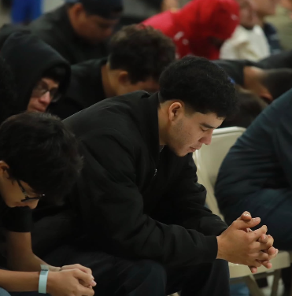

Oración
Un tiempo para buscar la presencia de Dios.
Más que un retiro, una experiencia de fe, amistad, unidad y un encuentro especial con Dios.
Descubre nuestra historia ↓Hay experiencias que pasan, pero dejan recuerdos que permanecen para siempre.
Cada momento compartido representa una oportunidad para crecer, aprender, fortalecer amistades y acercarnos más a nuestro Señor.
Las sonrisas, el compañerismo y cada experiencia vivida forman parte de una historia que merece ser recordada.
Cada fotografía cuenta una parte de nuestra historia.
Un tiempo para buscar la presencia de Dios.
Lugar tan hermoso donde va y no regresa igual, porque regresa lleno de la precia de Dios.
Aprendiendo a servir y amar a nuestro prójimo.
Renovando nuestro compromiso con el Señor.


SALMOS 133:1
A Dios, por permitirnos compartir esta experiencia. A nuestros líderes, servidores y cada persona que hizo posible este tiempo especial.
Que cada enseñanza, cada oración y cada recuerdo permanezcan en nuestros corazones y nos impulsen a seguir creciendo en la fe.